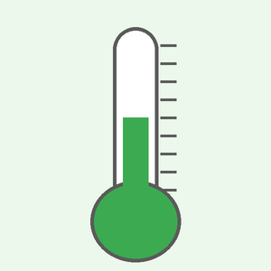
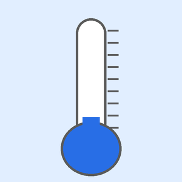

Blok 14. Tryb egzaminacyjny II: listy, suwaki i obrazy w nowych kombinacjach
Faza III — tryb egzaminacyjny W trakcieDwa kolejne pełne zadania: lista z dwiema kolekcjami i obliczeniami na danych oraz suwak z przesunięciem zakresu sterujący obrazem, kolorem tła i listą pomiarów.
1. Cel
Po wykonaniu tego bloku będziesz potrafił:
- prowadzić dwie kolekcje równoległe (tekst do listy + liczby do obliczeń) i liczyć na nich sumę i maksimum,
- usuwać elementy listy długim przytrzymaniem i przeliczać wyniki,
- obsłużyć suwak z ujemnym zakresem i uzależnić od przedziału obraz, opis i kolor tła,
- zmieścić się w czasie z dwoma zadaniami złożonymi z 3–4 wzorców.
Plan czasu (4 × 45 min = 180 min)
| Przypomnienie (workflow) | 10 min |
| Przykład (analiza) | 10 min |
| Mikroćwiczenia (sprint) | 20 min |
| Rozgrzewka | 20 min |
| Próbny egzamin — zadanie 1 | 50 min |
| Próbny egzamin — zadanie 2 | 60 min |
| Samoocena + mini-test | 10 min |
| Razem | 180 min |
|---|
Powiązanie z arkuszami: zadanie 1: W5 (lista jak Arkusz_05) + W2 (walidacja) + obliczenia na kolekcji (konsola Arkusza_14: suma, maksimum); zadanie 2: W4 (suwak jak 07/10, zakres przesunięty) + W6 (obraz wg przedziału) + zmiana tła (W1) + W5. Żadne nie kopiuje arkusza.
2. Krótkie przypomnienie: workflow egzaminacyjny
Workflow egzaminacyjny — 10 kroków
| Krok | Co robisz | Czas (z ~60 min) |
|---|---|---|
| 1 | Przeczytaj całe zadanie (także założenia i ostatnią stronę) | 3 min |
| 2 | Wypisz elementy interfejsu (kolejność z góry na dół, rzędy) | 2 min |
| 3 | Wypisz dane wejściowe | 1 min |
| 4 | Wypisz zdarzenia (co klika / przesuwa użytkownik) | 1 min |
| 5 | Wypisz logikę (wzory, warunki, cykle, liczniki) | 2 min |
| 6 | Wypisz wyniki (co i gdzie się zmienia) | 1 min |
| 7 | Zbuduj interfejs w XML → uruchom | 15 min |
| 8 | Dodaj logikę w Javie (zdarzenie po zdarzeniu, uruchamiając po każdym) | 20 min |
| 9 | Przetestuj każdy punkt „Działanie aplikacji”, zrób zrzuty | 7 min |
| 10 | Porównaj punkt po punkcie ze specyfikacją; spakuj mobilna.zip, skopiuj pliki | 8 min |
Zasada: najpierw działający szkielet, potem szczegóły. Aplikacja, która się uruchamia i realizuje 80% wymagań, daje więcej punktów niż „prawie gotowa”, która się nie kompiluje. Po każdej większej zmianie — uruchom.
Nowe w tym bloku (krótko)
// długie przytrzymanie elementu listy
lvLista.setOnItemLongClickListener((parent, view, position, id) -> {
lista.remove(position); // usuń z kolekcji (po indeksie)
adapter.notifyDataSetChanged();
return true; // zdarzenie obsłużone
});
// kolekcja liczb: typ obiektowy Double / Integer
ArrayList<Double> kwoty = new ArrayList<>();
kwoty.add(12.5);
double pierwsza = kwoty.get(0);3. Przykład: analiza specyfikacji krok po kroku
Specyfikacja (fragment): „Aplikacja «Oceny z przedmiotu». Pole «Ocena» (1–6) i przycisk «DODAJ». Lista ocen w kolejności dodawania. Napisy «Średnia: x,xx» i «Najczęstsza ocena: y». Oceny spoza zakresu nie są dodawane (komunikat). Przytrzymanie oceny na liście usuwa ją.”
| INTERFEJS | rząd [pole + przycisk], lista, 2 napisy |
| DANE | ocena (int 1..6) |
| ZDARZENIA | DODAJ, długie przytrzymanie elementu |
| LOGIKA | walidacja zakresu; ArrayList<Integer>; średnia; najczęstsza = zliczanie wystąpień int[7] (jak w bloku 10) |
| WYNIK | lista, dwa napisy, Toast przy błędzie |
| WYGLĄD | wg obrazu |
Jakie wzorce? W5 (lista) + W2 (walidacja) + zliczanie z bloku 10. Pułapka: po usunięciu elementu trzeba przeliczyć oba napisy — więc całe przeliczanie trzymaj w jednej metodzie odswiez() wołanej po dodaniu i po usunięciu. Pusta lista → średnia „—” (bez dzielenia przez zero).
4. Mikroćwiczenia: sprint z pamięci
Ćwiczenie 14.1 — Sprint 1 (3 min): suma i maksimum listy
Dla ArrayList<Double> kwoty policz sumę i indeks największego elementu (−1 dla pustej listy).
Sprawdź odpowiedź
double suma = 0;
int indeksMax = -1;
for (int i = 0; i < kwoty.size(); i++) {
suma += kwoty.get(i);
if (indeksMax == -1 || kwoty.get(i) > kwoty.get(indeksMax)) {
indeksMax = i;
}
}Ćwiczenie 14.2 — Sprint 2 (2 min): zakres −20..40
Jakie max ma suwak i jak odczytasz temperaturę? Jaki progress ustawisz, aby na starcie było 20 °C?
Sprawdź odpowiedź
max="60", temperatura = progress - 20; 20 °C → progress="40".
Ćwiczenie 14.3 — Sprint 3 (3 min): przedziały
Zapisz if/else if/else dla temperatury t: poniżej 0 — „Mróz”, 0..20 — „Umiarkowanie”, powyżej 20 — „Gorąco”.
Sprawdź odpowiedź
if (t < 0) … else if (t <= 20) … else … — kolejność od najmniejszych wartości, granice zgodnie z treścią (0 i 20 należą do „Umiarkowanie”).
Ćwiczenie 14.4 — Sprint 4 (2 min): tło rozkładu
Ustaw tło rozkładu głównego (id main) na #FFCCBC.
Sprawdź odpowiedź
LinearLayout uklad = findViewById(R.id.main); uklad.setBackgroundColor(Color.parseColor("#FFCCBC"));
Ćwiczenie 14.5 — Sprint 5 (3 min): usuwanie z list równoległych
Masz opisy i kwoty (równoległe). Napisz obsługę długiego przytrzymania, która usuwa element z obu.
Sprawdź odpowiedź
lv.setOnItemLongClickListener((parent, view, position, id) -> {
opisy.remove(position);
kwoty.remove(position);
odswiez();
return true;
});Uwaga: kwoty.remove(position) z argumentem int usuwa po indeksie.
5. Zadanie prowadzone (rozgrzewka)
Rozgrzewka: kolejka w sekretariacie (20 min)
Lista działająca jak kolejka: nowe numerki trafiają na koniec, obsługiwany jest zawsze pierwszy, a przytrzymanie usuwa dowolny numerek. Najpierw analiza (6 wierszy), potem kod.
- NOWY NUMEREK dopisuje na koniec listy „Numerek n” (n rośnie od 1 i nie cofa się, nawet gdy ktoś zrezygnuje).
- NASTĘPNY usuwa pierwszy element i pokazuje go w polu „Obsługiwany: …”; przy pustej kolejce —
Toast„Kolejka jest pusta”. - Przytrzymanie numerka usuwa go z kolejki.
- Napis „W kolejce: n” zawsze aktualny. Lista wypełnia wolne miejsce, separator szary 1dp.
Pomoc — otwieraj po kolei i tylko wtedy, gdy utkniesz:
Poziom 1 — kierunek
Jedna metoda odswiez() (adapter + napis) wołana po każdej zmianie kolejki. Licznik numerków to osobne pole — nie size().
Poziom 2 — konkretna wskazówka
String pierwszy = kolejka.remove(0); — remove(int) zwraca usunięty element. Przytrzymanie: setOnItemLongClickListener(... -> { …; return true; }).
Poziom 3 — pseudokod / struktura
NOWY: ostatniNumer++; add("Numerek " + ostatniNumer); odswiez()
NASTĘPNY: pusta → Toast; koniec; p ← remove(0); "Obsługiwany: " + p; odswiez()
długie(pos): remove(pos); odswiez(); return truePoziom 4 — fragment implementacji
lvKolejka.setOnItemLongClickListener((parent, view, position, id) -> {
kolejka.remove(position);
odswiez();
return true;
});Poziom 5 — pełne rozwiązanie
<?xml version="1.0" encoding="utf-8"?>
<LinearLayout xmlns:android="http://schemas.android.com/apk/res/android"
android:id="@+id/main"
android:layout_width="match_parent"
android:layout_height="match_parent"
android:orientation="vertical"
android:padding="12dp">
<TextView
android:id="@+id/tvTytul"
android:layout_width="match_parent"
android:layout_height="wrap_content"
android:text="Kolejka w sekretariacie"
android:textSize="26sp"
android:textStyle="bold" />
<TextView
android:id="@+id/tvObslugiwany"
android:layout_width="match_parent"
android:layout_height="wrap_content"
android:layout_marginVertical="10dp"
android:background="#FFF3E0"
android:gravity="center"
android:padding="10dp"
android:text="Obsługiwany: —"
android:textSize="20sp" />
<LinearLayout
android:layout_width="match_parent"
android:layout_height="wrap_content"
android:orientation="horizontal">
<Button
android:id="@+id/btnNowy"
android:layout_width="0dp"
android:layout_height="wrap_content"
android:layout_weight="1"
android:layout_marginEnd="5dp"
android:text="NOWY NUMEREK" />
<Button
android:id="@+id/btnNastepny"
android:layout_width="0dp"
android:layout_height="wrap_content"
android:layout_weight="1"
android:layout_marginStart="5dp"
android:backgroundTint="#E65100"
android:text="NASTĘPNY" />
</LinearLayout>
<TextView
android:id="@+id/tvLiczba"
android:layout_width="wrap_content"
android:layout_height="wrap_content"
android:text="W kolejce: 0" />
<ListView
android:id="@+id/lvKolejka"
android:layout_width="match_parent"
android:layout_height="0dp"
android:layout_weight="1"
android:divider="#9E9E9E"
android:dividerHeight="1dp" />
<TextView
android:id="@+id/tvPodpowiedz"
android:layout_width="match_parent"
android:layout_height="wrap_content"
android:gravity="center"
android:text="Przytrzymaj numerek, aby go usunąć (osoba zrezygnowała)"
android:textColor="#808080" />
</LinearLayout>package com.example.egzamin;
import android.os.Bundle;
import android.widget.ArrayAdapter;
import android.widget.Button;
import android.widget.ListView;
import android.widget.TextView;
import android.widget.Toast;
import java.util.ArrayList;
import androidx.appcompat.app.AppCompatActivity;
public class MainActivity extends AppCompatActivity {
private final ArrayList<String> kolejka = new ArrayList<>();
private ArrayAdapter<String> adapter;
private int ostatniNumer = 0; // numerki rosną, nawet gdy ktoś wyjdzie z kolejki
private TextView tvObslugiwany, tvLiczba;
@Override
protected void onCreate(Bundle savedInstanceState) {
super.onCreate(savedInstanceState);
setContentView(R.layout.activity_main);
tvObslugiwany = findViewById(R.id.tvObslugiwany);
tvLiczba = findViewById(R.id.tvLiczba);
ListView lvKolejka = findViewById(R.id.lvKolejka);
Button btnNowy = findViewById(R.id.btnNowy);
Button btnNastepny = findViewById(R.id.btnNastepny);
adapter = new ArrayAdapter<>(this, android.R.layout.simple_list_item_1, kolejka);
lvKolejka.setAdapter(adapter);
btnNowy.setOnClickListener(v -> {
ostatniNumer++;
kolejka.add("Numerek " + ostatniNumer); // na koniec kolejki
odswiez();
});
btnNastepny.setOnClickListener(v -> {
if (kolejka.isEmpty()) {
Toast.makeText(this, "Kolejka jest pusta", Toast.LENGTH_SHORT).show();
return;
}
String obslugiwany = kolejka.remove(0); // pierwszy w kolejce
tvObslugiwany.setText("Obsługiwany: " + obslugiwany);
odswiez();
});
// długie przytrzymanie: usuń dowolny element; true = zdarzenie obsłużone
lvKolejka.setOnItemLongClickListener((parent, view, position, id) -> {
kolejka.remove(position);
odswiez();
return true;
});
}
private void odswiez() {
adapter.notifyDataSetChanged();
tvLiczba.setText("W kolejce: " + kolejka.size());
}
}Pliki rozwiązania: rozwiazania/b14_prowadzone/ (pierwsza linia package musi odpowiadać Twojemu projektowi).
6. Próbny egzamin — zadanie 1
Próbny egzamin 3: Wydatki (50 min)
Warunki próbnego egzaminu: pracuj bez zaglądania do wcześniejszych bloków i własnych projektów (wolno: ta treść, zasoby, dokumentacja Android Studio). Zmierz czas. Podpowiedzi otwieraj dopiero po upływie czasu albo gdy zupełnie utkniesz — i zapisz, z których skorzystałeś. Na koniec: zrzuty mobile1.png…, mobilna.zip, kopie plików źródłowych, srodowisko.txt.
Za pomocą środowiska programistycznego wykonaj aplikację mobilną do zapisywania wydatków i uruchom ją w emulatorze.
| INTERFEJS | Co musi znaleźć się na ekranie? |
| DANE | Co wpisuje / wybiera użytkownik? |
| ZDARZENIA | Co uruchamia działania? |
| LOGIKA | Co trzeba policzyć / sprawdzić / zmienić? |
| WYNIK | Co aplikacja wyświetla lub zmienia? |
| WYGLĄD | Kolory, rozmiary, marginesy, rozkłady? |
Porównaj swoją analizę z wzorcową
| INTERFEJS | tytuł; rząd 2 pól (nazwa 2:1 kwota); przycisk na szerokość; lista; linia; napis sumy; napis największego wydatku; autor |
| DANE | nazwa (tekst), kwota (dziesiętna) |
| ZDARZENIA | DODAJ WYDATEK, długie przytrzymanie elementu listy |
| LOGIKA | walidacja (nazwa niepusta, kwota > 0); kolekcje: opisy (lista), kwoty, nazwy; suma; maksimum; usuwanie z wszystkich kolekcji |
| WYNIK | wpis „<nazwa> — <kwota> zł”, „Suma: x zł”, „Największy wydatek: <nazwa>”/„—”, Toast przy błędzie |
| WYGLĄD | tło #E0F7FA; tytuł #00838F biały; przycisk #00838F; separator #00838F; linia 2dp; suma do prawej, pogrubiona, większa |
Elementy aplikacji:
- Napis „Wydatki”.
- Rząd dwóch pól edycyjnych: „Na co?” (tekst) i „Kwota” (liczby dziesiętne); pole nazwy jest dwa razy szersze.
- Przycisk „DODAJ WYDATEK”.
- Lista wydatków.
- Linia pozioma.
- Napis „Suma: 0,00 zł” i napis „Największy wydatek: —”.
- Napis „Autor: ”, dalej numer zdającego.
Działanie aplikacji:
- „DODAJ WYDATEK”: jeżeli nazwa jest pusta albo kwota nie jest liczbą większą od 0 —
Toast„Podaj nazwę i poprawną kwotę”. W przeciwnym razie na końcu listy pojawia się wpis „<nazwa> — <kwota> zł” (kwota z dwoma miejscami po przecinku), pola są czyszczone, a napisy sumy i największego wydatku są aktualizowane. - Długie przytrzymanie wpisu usuwa go z listy i aktualizuje oba napisy. Gdy lista jest pusta: „Suma: 0,00 zł” i „Największy wydatek: —”.
Założenia aplikacji:
- Interfejs w XML; rozkład liniowy pionowy z zagnieżdżonym rozkładem poziomym dla pól; proporcja szerokości pól 2:1.
- Tło strony #E0F7FA; tytuł: tło #00838F, biała czcionka, największa, marginesy wewnętrzne 10.
- Przycisk na całą szerokość (margines boczny 10), tło #00838F, biała czcionka. Separator listy #00838F, widoczny. Linia #00838F o wysokości 2.
- Lista wypełnia wolne miejsce. Napisy sumy i największego wydatku wyrównane do prawej; suma pogrubiona i większa.
- Kwoty przechowywane w kolekcji liczb (nie odczytywane z tekstów listy). Przeliczanie napisów w jednej metodzie.
Checklista zadania
Pomoc — otwieraj po kolei i tylko wtedy, gdy utkniesz:
Poziom 1 — kierunek
Trzy kolekcje równoległe: tekst do wyświetlenia (opisy), kwoty (Double) i nazwy (do napisu „Największy wydatek”). Wszystkie zmieniasz razem.
Poziom 2 — konkretna wskazówka
Walidacja w jednym warunku: if (nazwa.isEmpty() || kwota <= 0), gdzie przy błędzie konwersji ustawiasz kwota = -1 w catch.
Poziom 3 — pseudokod / struktura
dodaj(): nazwa, kwota (try → −1 przy błędzie)
nazwa pusta lub kwota ≤ 0 → Toast; koniec
nazwy.add; kwoty.add; opisy.add(format); wyczyść pola; odswiez()
długie(pos): remove(pos) z 3 kolekcji; odswiez()
odswiez(): notify; pętla: suma, indeksMax; napisy (indeksMax == −1 → "—")Poziom 4 — fragment implementacji
private void odswiez() {
adapter.notifyDataSetChanged();
double suma = 0;
int indeksMax = -1;
for (int i = 0; i < kwoty.size(); i++) {
suma += kwoty.get(i);
if (indeksMax == -1 || kwoty.get(i) > kwoty.get(indeksMax)) {
indeksMax = i;
}
}
tvSuma.setText(String.format("Suma: %.2f zł", suma));
tvNajwiekszy.setText(indeksMax == -1 ? "Największy wydatek: —" : "Największy wydatek: " + nazwy.get(indeksMax));
}Poziom 5 — pełne rozwiązanie
<?xml version="1.0" encoding="utf-8"?>
<LinearLayout xmlns:android="http://schemas.android.com/apk/res/android"
android:id="@+id/main"
android:layout_width="match_parent"
android:layout_height="match_parent"
android:orientation="vertical"
android:background="#E0F7FA">
<TextView
android:id="@+id/tvTytul"
android:layout_width="match_parent"
android:layout_height="wrap_content"
android:background="#00838F"
android:padding="10dp"
android:text="Wydatki"
android:textColor="#FFFFFF"
android:textSize="28sp" />
<LinearLayout
android:layout_width="match_parent"
android:layout_height="wrap_content"
android:layout_marginHorizontal="10dp"
android:layout_marginTop="10dp"
android:orientation="horizontal">
<EditText
android:id="@+id/etNazwa"
android:layout_width="0dp"
android:layout_height="wrap_content"
android:layout_weight="2"
android:hint="Na co?"
android:inputType="text" />
<EditText
android:id="@+id/etKwota"
android:layout_width="0dp"
android:layout_height="wrap_content"
android:layout_weight="1"
android:hint="Kwota"
android:inputType="numberDecimal" />
</LinearLayout>
<Button
android:id="@+id/btnDodaj"
android:layout_width="match_parent"
android:layout_height="wrap_content"
android:layout_marginHorizontal="10dp"
android:backgroundTint="#00838F"
android:text="DODAJ WYDATEK"
android:textColor="#FFFFFF" />
<ListView
android:id="@+id/lvWydatki"
android:layout_width="match_parent"
android:layout_height="0dp"
android:layout_weight="1"
android:layout_marginHorizontal="10dp"
android:divider="#00838F"
android:dividerHeight="1dp" />
<View
android:layout_width="match_parent"
android:layout_height="2dp"
android:background="#00838F" />
<TextView
android:id="@+id/tvSuma"
android:layout_width="match_parent"
android:layout_height="wrap_content"
android:layout_marginHorizontal="10dp"
android:gravity="end"
android:text="Suma: 0,00 zł"
android:textSize="22sp"
android:textStyle="bold" />
<TextView
android:id="@+id/tvNajwiekszy"
android:layout_width="match_parent"
android:layout_height="wrap_content"
android:layout_marginHorizontal="10dp"
android:gravity="end"
android:text="Największy wydatek: —" />
<TextView
android:id="@+id/tvAutor"
android:layout_width="match_parent"
android:layout_height="wrap_content"
android:gravity="center"
android:padding="6dp"
android:text="Autor: 00000000000"
android:textColor="#808080" />
</LinearLayout>package com.example.egzamin;
import android.os.Bundle;
import android.widget.ArrayAdapter;
import android.widget.Button;
import android.widget.EditText;
import android.widget.ListView;
import android.widget.TextView;
import android.widget.Toast;
import java.util.ArrayList;
import androidx.appcompat.app.AppCompatActivity;
public class MainActivity extends AppCompatActivity {
// dwie kolekcje równoległe: opisy do wyświetlenia i kwoty do obliczeń
private final ArrayList<String> opisy = new ArrayList<>();
private final ArrayList<Double> kwoty = new ArrayList<>();
private final ArrayList<String> nazwy = new ArrayList<>();
private ArrayAdapter<String> adapter;
private EditText etNazwa, etKwota;
private TextView tvSuma, tvNajwiekszy;
@Override
protected void onCreate(Bundle savedInstanceState) {
super.onCreate(savedInstanceState);
setContentView(R.layout.activity_main);
etNazwa = findViewById(R.id.etNazwa);
etKwota = findViewById(R.id.etKwota);
tvSuma = findViewById(R.id.tvSuma);
tvNajwiekszy = findViewById(R.id.tvNajwiekszy);
ListView lvWydatki = findViewById(R.id.lvWydatki);
Button btnDodaj = findViewById(R.id.btnDodaj);
adapter = new ArrayAdapter<>(this, android.R.layout.simple_list_item_1, opisy);
lvWydatki.setAdapter(adapter);
btnDodaj.setOnClickListener(v -> dodaj());
lvWydatki.setOnItemLongClickListener((parent, view, position, id) -> {
opisy.remove(position);
kwoty.remove(position);
nazwy.remove(position);
odswiez();
return true;
});
}
private void dodaj() {
String nazwa = etNazwa.getText().toString().trim();
String tekstKwoty = etKwota.getText().toString().trim().replace(',', '.');
double kwota;
try {
kwota = Double.parseDouble(tekstKwoty);
} catch (NumberFormatException e) {
kwota = -1;
}
if (nazwa.isEmpty() || kwota <= 0) {
Toast.makeText(this, "Podaj nazwę i poprawną kwotę", Toast.LENGTH_SHORT).show();
return;
}
nazwy.add(nazwa);
kwoty.add(kwota);
opisy.add(String.format("%s — %.2f zł", nazwa, kwota));
etNazwa.setText("");
etKwota.setText("");
odswiez();
}
private void odswiez() {
adapter.notifyDataSetChanged();
double suma = 0;
int indeksMax = -1;
for (int i = 0; i < kwoty.size(); i++) {
suma += kwoty.get(i);
if (indeksMax == -1 || kwoty.get(i) > kwoty.get(indeksMax)) {
indeksMax = i;
}
}
tvSuma.setText(String.format("Suma: %.2f zł", suma));
if (indeksMax == -1) {
tvNajwiekszy.setText("Największy wydatek: —");
} else {
tvNajwiekszy.setText("Największy wydatek: " + nazwy.get(indeksMax));
}
}
}Pliki rozwiązania: rozwiazania/b14_egzC/ (pierwsza linia package musi odpowiadać Twojemu projektowi).
7. Próbny egzamin — zadanie 2
Próbny egzamin 4: Stacja pogodowa (60 min)
Warunki próbnego egzaminu: pracuj bez zaglądania do wcześniejszych bloków i własnych projektów (wolno: ta treść, zasoby, dokumentacja Android Studio). Zmierz czas. Podpowiedzi otwieraj dopiero po upływie czasu albo gdy zupełnie utkniesz — i zapisz, z których skorzystałeś. Na koniec: zrzuty mobile1.png…, mobilna.zip, kopie plików źródłowych, srodowisko.txt.
Za pomocą środowiska programistycznego wykonaj aplikację mobilną — prostą stację pogodową z zapisem pomiarów. Do wykonania zadania wykorzystaj obrazy z archiwum zasoby_b14-egzD.zip.
| INTERFEJS | Co musi znaleźć się na ekranie? |
| DANE | Co wpisuje / wybiera użytkownik? |
| ZDARZENIA | Co uruchamia działania? |
| LOGIKA | Co trzeba policzyć / sprawdzić / zmienić? |
| WYNIK | Co aplikacja wyświetla lub zmienia? |
| WYGLĄD | Kolory, rozmiary, marginesy, rozkłady? |
Porównaj swoją analizę z wzorcową
| INTERFEJS | tytuł; rząd [obraz | kolumna 3 napisów]; suwak; przycisk; napis średniej; lista; autor |
| DANE | temperatura −20..40 (suwak z przesunięciem) |
| ZDARZENIA | zmiana suwaka, ZAPISZ POMIAR |
| LOGIKA | t = progress − 20; °F = t·9/5 + 32; przedziały <0 / 0..20 / >20 → obraz, opis, tło; lista pomiarów; średnia |
| WYNIK | „t °C”, „x,x °F”, opis, obraz, kolor tła strony; wpisy „Pomiar n: t °C”; średnia (1 miejsce) |
| WYGLĄD | tytuł #37474F biały wyśrodkowany; obraz 160dp w lewej połowie; temperatura 26sp pogrubiona; przycisk #37474F wyśrodkowany; lista wypełnia resztę |


Elementy aplikacji:
- Napis „Stacja pogodowa”.
- Rząd: po lewej obraz termometru, po prawej kolumna trzech napisów: temperatura w °C, temperatura w °F, opis.
- Suwak temperatury.
- Przycisk „ZAPISZ POMIAR”.
- Napis „Średnia z pomiarów: —”.
- Lista pomiarów.
- Napis „Autor: ”, dalej numer zdającego.
Działanie aplikacji:
- Suwak pozwala ustawić temperaturę od −20 do 40 °C (liczby całkowite); w stanie początkowym 20 °C.
- Każda zmiana suwaka aktualizuje: napis „<t> °C”, napis „<f> °F” (f = t · 9/5 + 32, jedno miejsce po przecinku), opis, obraz i kolor tła strony:
- t < 0: „Mróz”,
termometr_zimno, tło #BBDEFB; - 0 ≤ t ≤ 20: „Umiarkowanie”,
termometr_umiarkowanie, tło #C8E6C9; - t > 20: „Gorąco”,
termometr_goraco, tło #FFCCBC.
- t < 0: „Mróz”,
- „ZAPISZ POMIAR” dopisuje na końcu listy „Pomiar <n>: <t> °C” i aktualizuje napis „Średnia z pomiarów: <x> °C” (jedno miejsce po przecinku).
Założenia aplikacji:
- Interfejs w XML; rozkład liniowy pionowy z zagnieżdżonym rozkładem poziomym (obraz + rozkład pionowy napisów), obie części równej szerokości.
- Tytuł: tło #37474F, biała czcionka, największa, wyśrodkowana, marginesy wewnętrzne 10. Obraz wysokości 160.
- Napis temperatury w °C: 26, pogrubiony. Przycisk wyśrodkowany, tło #37474F, biała czcionka. Średnia pogrubiona.
- Lista wypełnia wolne miejsce nad napisem autora.
- Zamiana wartości suwaka na temperaturę w osobnej metodzie; stała z minimalną temperaturą.
Zasoby do zadania


Pobierz wszystkie: zasoby_b14-egzD.zip. Obrazy skopiuj do app/src/main/res/drawable (nazwy: małe litery, bez spacji i myślników).
Checklista zadania
Pomoc — otwieraj po kolei i tylko wtedy, gdy utkniesz:
Poziom 1 — kierunek
Jedna metoda pokazTemperature(int t) ustawia wszystkie 5 rzeczy zależnych od temperatury. Wywołaj ją z listenera i na końcu onCreate (stan początkowy).
Poziom 2 — konkretna wskazówka
max="60", progress="40", t = progress - 20. °F: t * 9 / 5.0 + 32 (dzielenie przez 5.0!). Średnia: (double) suma / pomiary.size().
Poziom 3 — pseudokod / struktura
listener: pokazTemperature(temperatura())
pokazTemperature(t): "t °C"; "%.1f °F"; jeśli t<0 → zimno/Mróz/#BBDEFB; t<=20 → …; inaczej → …
ZAPISZ: t ← temperatura(); suma += t; lista.add("Pomiar " + (size+1) + ": " + t + " °C"); notify; średniaPoziom 4 — fragment implementacji
private void pokazTemperature(int t) {
tvCelsjusz.setText(t + " °C");
tvFahrenheit.setText(String.format("%.1f °F", t * 9 / 5.0 + 32));
if (t < 0) {
ivTermometr.setImageResource(R.drawable.termometr_zimno);
tvOpis.setText("Mróz");
ukladGlowny.setBackgroundColor(Color.parseColor("#BBDEFB"));
} else if (t <= 20) {
…
} else {
…
}
}Poziom 5 — pełne rozwiązanie
<?xml version="1.0" encoding="utf-8"?>
<LinearLayout xmlns:android="http://schemas.android.com/apk/res/android"
android:id="@+id/main"
android:layout_width="match_parent"
android:layout_height="match_parent"
android:orientation="vertical"
android:background="#C8E6C9">
<TextView
android:id="@+id/tvTytul"
android:layout_width="match_parent"
android:layout_height="wrap_content"
android:background="#37474F"
android:gravity="center"
android:padding="10dp"
android:text="Stacja pogodowa"
android:textColor="#FFFFFF"
android:textSize="28sp" />
<LinearLayout
android:layout_width="match_parent"
android:layout_height="wrap_content"
android:layout_margin="10dp"
android:gravity="center_vertical"
android:orientation="horizontal">
<ImageView
android:id="@+id/ivTermometr"
android:layout_width="0dp"
android:layout_height="160dp"
android:layout_weight="1"
android:contentDescription="Termometr"
android:src="@drawable/termometr_umiarkowanie" />
<LinearLayout
android:layout_width="0dp"
android:layout_height="wrap_content"
android:layout_weight="1"
android:orientation="vertical">
<TextView
android:id="@+id/tvCelsjusz"
android:layout_width="match_parent"
android:layout_height="wrap_content"
android:gravity="center"
android:text="20 °C"
android:textSize="26sp"
android:textStyle="bold" />
<TextView
android:id="@+id/tvFahrenheit"
android:layout_width="match_parent"
android:layout_height="wrap_content"
android:gravity="center"
android:text="68,0 °F" />
<TextView
android:id="@+id/tvOpis"
android:layout_width="match_parent"
android:layout_height="wrap_content"
android:gravity="center"
android:text="Umiarkowanie"
android:textSize="18sp" />
</LinearLayout>
</LinearLayout>
<SeekBar
android:id="@+id/sbTemperatura"
android:layout_width="match_parent"
android:layout_height="wrap_content"
android:layout_marginHorizontal="10dp"
android:max="60"
android:progress="40" />
<Button
android:id="@+id/btnZapisz"
android:layout_width="wrap_content"
android:layout_height="wrap_content"
android:layout_gravity="center_horizontal"
android:layout_marginTop="10dp"
android:backgroundTint="#37474F"
android:text="ZAPISZ POMIAR"
android:textColor="#FFFFFF" />
<TextView
android:id="@+id/tvSrednia"
android:layout_width="match_parent"
android:layout_height="wrap_content"
android:gravity="center"
android:text="Średnia z pomiarów: —"
android:textStyle="bold" />
<ListView
android:id="@+id/lvPomiary"
android:layout_width="match_parent"
android:layout_height="0dp"
android:layout_weight="1"
android:layout_marginHorizontal="10dp" />
<TextView
android:id="@+id/tvAutor"
android:layout_width="match_parent"
android:layout_height="wrap_content"
android:gravity="center"
android:padding="6dp"
android:text="Autor: 00000000000"
android:textColor="#616161" />
</LinearLayout>package com.example.egzamin;
import android.graphics.Color;
import android.os.Bundle;
import android.widget.ArrayAdapter;
import android.widget.Button;
import android.widget.ImageView;
import android.widget.LinearLayout;
import android.widget.ListView;
import android.widget.SeekBar;
import android.widget.TextView;
import java.util.ArrayList;
import androidx.appcompat.app.AppCompatActivity;
public class MainActivity extends AppCompatActivity {
private static final int MIN_TEMPERATURA = -20; // suwak 0..60 → temperatura -20..40
private final ArrayList<String> pomiary = new ArrayList<>();
private ArrayAdapter<String> adapter;
private int sumaPomiarow = 0;
private LinearLayout ukladGlowny;
private SeekBar sbTemperatura;
private ImageView ivTermometr;
private TextView tvCelsjusz, tvFahrenheit, tvOpis, tvSrednia;
@Override
protected void onCreate(Bundle savedInstanceState) {
super.onCreate(savedInstanceState);
setContentView(R.layout.activity_main);
ukladGlowny = findViewById(R.id.main);
sbTemperatura = findViewById(R.id.sbTemperatura);
ivTermometr = findViewById(R.id.ivTermometr);
tvCelsjusz = findViewById(R.id.tvCelsjusz);
tvFahrenheit = findViewById(R.id.tvFahrenheit);
tvOpis = findViewById(R.id.tvOpis);
tvSrednia = findViewById(R.id.tvSrednia);
ListView lvPomiary = findViewById(R.id.lvPomiary);
Button btnZapisz = findViewById(R.id.btnZapisz);
adapter = new ArrayAdapter<>(this, android.R.layout.simple_list_item_1, pomiary);
lvPomiary.setAdapter(adapter);
sbTemperatura.setOnSeekBarChangeListener(new SeekBar.OnSeekBarChangeListener() {
@Override
public void onProgressChanged(SeekBar seekBar, int progress, boolean fromUser) {
pokazTemperature(temperatura());
}
@Override
public void onStartTrackingTouch(SeekBar seekBar) {
}
@Override
public void onStopTrackingTouch(SeekBar seekBar) {
}
});
btnZapisz.setOnClickListener(v -> {
int t = temperatura();
sumaPomiarow += t;
pomiary.add("Pomiar " + (pomiary.size() + 1) + ": " + t + " °C");
adapter.notifyDataSetChanged();
tvSrednia.setText(String.format("Średnia z pomiarów: %.1f °C", (double) sumaPomiarow / pomiary.size()));
});
pokazTemperature(temperatura());
}
private int temperatura() {
return sbTemperatura.getProgress() + MIN_TEMPERATURA;
}
private void pokazTemperature(int t) {
tvCelsjusz.setText(t + " °C");
tvFahrenheit.setText(String.format("%.1f °F", t * 9 / 5.0 + 32));
if (t < 0) {
ivTermometr.setImageResource(R.drawable.termometr_zimno);
tvOpis.setText("Mróz");
ukladGlowny.setBackgroundColor(Color.parseColor("#BBDEFB"));
} else if (t <= 20) {
ivTermometr.setImageResource(R.drawable.termometr_umiarkowanie);
tvOpis.setText("Umiarkowanie");
ukladGlowny.setBackgroundColor(Color.parseColor("#C8E6C9"));
} else {
ivTermometr.setImageResource(R.drawable.termometr_goraco);
tvOpis.setText("Gorąco");
ukladGlowny.setBackgroundColor(Color.parseColor("#FFCCBC"));
}
}
}Pliki rozwiązania: rozwiazania/b14_egzD/ (pierwsza linia package musi odpowiadać Twojemu projektowi).
8. Checklista
Sprawdź swoją aplikację z zadania INF.04 punkt po punkcie (krok 10 procedury).
9. Mini-test
10. Skończyłeś wcześniej?
Oceny z przedmiotu
Zaimplementuj aplikację z przykładu analizy (średnia, najczęstsza ocena, usuwanie) w 30 minut.
Kategorie wydatków
Dodaj do wydatków RadioGroup z kategoriami (Jedzenie, Transport, Inne) i napis z sumą dla wybranej kategorii.
Min i max pomiarów
W stacji pogodowej dodaj napis „Min: x °C, Max: y °C” dla zapisanych pomiarów.